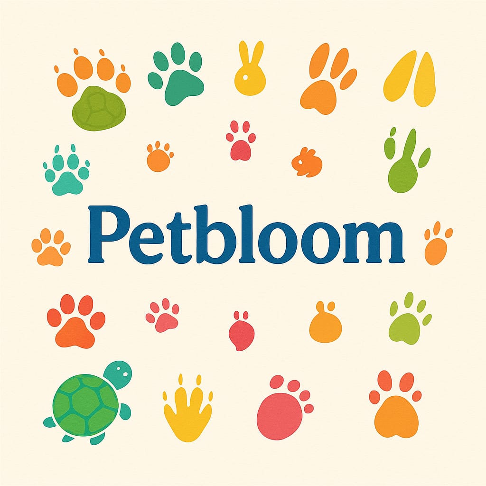

En PetBloom
En PetBloom queremos promover el bienestar y la felicidad de tus mascotas. Creemos que cada animal merece una vida plena, saludable y llena de amor, por eso hemos creado un espacio donde encontrarás información clara, concisa y confiable sobre cada raza, sus cuidados específicos, necesidades particulares y consejos prácticos para su desarrollo óptimo.
Nuestra misión es brindar información clara, confiable y accesible sobre el cuidado, bienestar y salud de los animales, fomentando la responsabilidad, el respeto y el amor hacia todas las especies, tanto domésticas como silvestres.…
Nuestra visión es ser una fuente de referencia sobre el cuidado animal, contribuyendo a la creación de una sociedad más consciente, empática y comprometida con el bienestar animal en todo el mundo.
Nuestra informacion
Botón experimental (no sirve aun)
Tienda - Adopción
Espere por favor…